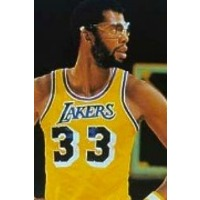
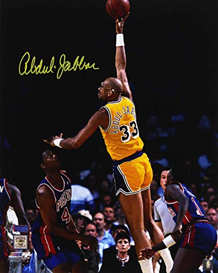

Kareem-Abdul-Jabbar


Member of three UCLA Bruins national championship teams, 1967, 1968 and 1969.Known for his "skyhook" shot, which he developed as a response to the NCAA ban on the dunk shot. It is a difficult shot to defend as the ball is released at the top of the arc.After converting to Islam in 1971, he changed his name from Lew Alcindor Jr. to Kareem Abdul-Jabbar. In Arabic, his name means a noble and powerful servant of Allah.Wearing number 33, the seven-foot-two-inch center was selected to 19 NBA All-Star games during 20 seasons in the pros, five with the Milwaukee Bucks and 14 with the Los Angeles Lakers.Won six NBA championships: once with the Milwaukee Bucks, in 1971, and five times with the Los Angeles Lakers, in 1980, 1982, 1985, 1987, 1988.Won six NBA MVP awards: 1971, 1972, 1974, 1976, 1977, 1980.Career NBA records include most field goals made: 15,837; most points: 38,387; and most minutes played: 57,446.He has authored several biographical and cultural books and has appeared in numerous films and TV shows.He studied under his friend, the late martial artist Bruce Lee, in the 1960s, and appeared with him in the film, "Game of Death," in 1978.
Back